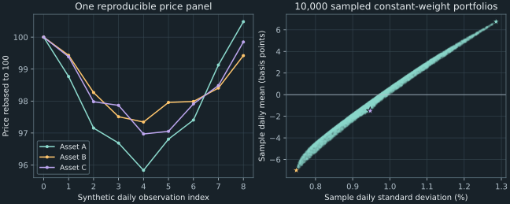

6. Market factors, regression, and implementation
An analyst reports that an asset with market beta 0.4 is less risky than the market. In the running covariance model, that asset's standard deviation is approximately 0.152315462 while the market's is 0.141421356. The beta calculation is correct; the inference about total volatility is not. A second report calls a nonzero regression intercept proof of market inefficiency. That inference also needs assumptions beyond the fitted number. This chapter separates exposure measurement, an expected-return pricing restriction, and the evidence a data pipeline actually supplies.
Chapter 5 extracted directions from a covariance matrix. Here we first choose a market or other named factor, then measure exposures to it. We derive regression coefficients, state the additional condition behind the CAPM return relation, and build a factor covariance model. The paired programming laboratories then turn aligned prices into holdings values, returns, fitted exposures, and sampled portfolio moments. A fixed synthetic dataset keeps those operations reproducible without presenting unverified historical market quotes as evidence.
Source spine: CAPM and factor models and the second-week R and Python laboratories, playlist positions 16, 18, and 19. The regression and covariance derivations, conditional pricing argument, fixed data construction, data-integrity checks, and portfolio-log-return comparison are teaching additions. All computed examples come from the companion program.
6.1 Beta measures one exposure, not the whole return distribution Recording 16, 4:05
Fix a common investment period and a deterministic safe return $r_f$ for that period. Let $R_i$ be asset $i$'s random simple return and $R_M$ a specified market return, both with finite second moments. Define their excess returns $Y_i=R_i-r_f$ and $X=R_M-r_f$. The subtraction compares the risky result with the modeled certain alternative. Government ownership of a particular institution is not itself a proof that its deposit or security has a certain payoff; certainty is an explicit assumption here.
Assume the market variance $\sigma_M^2=\operatorname{Var}(R_M)$ is positive. Define market beta by
\[ \beta_i=\frac{\operatorname{Cov}(R_i,R_M)}{\sigma_M^2} =\frac{\operatorname{Cov}(Y_i,X)}{\operatorname{Var}(X)}. \tag{6.1} \]The second equality uses the fact that subtracting deterministic constants leaves covariances and variances unchanged. If a safe-rate series varies across observations, excess-return construction must use the corresponding rate for each period; a covariance ratio of unadjusted series is not automatically the same calculation.
With positive asset standard deviation $\sigma_i$, the correlation identity from chapter 5 rewrites beta as $\beta_i=\rho_{iM}\sigma_i/\sigma_M$. Beta is dimensionless when both returns use the same units. It combines correlation with a volatility ratio. A value below one does not bound the asset's total standard deviation or promise a smaller realized movement on every date.
Construct a jointly valid numerical example
For a hypothetical one-year example, use market variance 0.02 and desired betas $\boldsymbol\beta=(0.75,0.40,0.50)^T$. Let residual returns be uncorrelated with the market and with one another, with variances 0.01, 0.02, and 0.015. Denote their covariance matrix by $D=\operatorname{diag}(0.01,0.02,0.015)$. Adding these residuals to the scaled market component constructs asset covariance
\[ \Sigma_A=0.02\boldsymbol\beta\boldsymbol\beta^T+D =\begin{pmatrix} 0.02125&0.006&0.0075\\ 0.006&0.0232&0.004\\ 0.0075&0.004&0.0200 \end{pmatrix}. \tag{6.2} \]The market cross-covariance vector is $\mathbf c=0.02\boldsymbol\beta=(0.015,0.008,0.010)^T$. Dividing each entry by market variance reproduces the three betas in (6.1). The second asset's variance is 0.0232, exceeding market variance 0.02 even though its beta is only 0.4. Its residual component, uncorrelated with the market, supplies the additional total variance. The companion verifies the full asset-plus-market covariance is positive definite.
Ratios alone do not verify a joint covariance model. To see the constraint, consider a block matrix $J=\begin{pmatrix}\Sigma_A&\mathbf c\\\mathbf c^T&v\end{pmatrix}$ with market variance $v\gt0$. For an asset exposure vector $\mathbf u$ and market exposure $z$, completing the square gives
\[ \begin{pmatrix}\mathbf u\\z\end{pmatrix}^T J\begin{pmatrix}\mathbf u\\z\end{pmatrix} =\mathbf u^T\!\left(\Sigma_A-\frac{\mathbf c\mathbf c^T}{v}\right)\mathbf u +v\left(z+\frac{\mathbf c^T\mathbf u}{v}\right)^2. \tag{6.3} \]Thus $J$ is positive semidefinite exactly when the residual matrix $\Sigma_A-\mathbf c\mathbf c^T/v$ is positive semidefinite. Sufficiency follows because both terms are nonnegative. For necessity, set $z=-\mathbf c^T\mathbf u/v$ so the square vanishes. In (6.2), the residual matrix is exactly the positive diagonal $D$, ensuring a consistent construction.
As a contrasting arithmetic example, asset variance 0.04, market variance 2, and cross-covariance 1.5 would give beta 0.75 but violate the covariance bound: $1.5^2\gt0.04(2)$. The two-by-two determinant is $-2.17$. Such numbers cannot all describe the same pair of return variables in unchanged units. Computing a familiar-looking beta is not enough; the covariance inputs must be mutually compatible.
The source's illustrative beta divisions motivate the computation, while the explicit joint construction supplies the missing consistency check. Nothing in a covariance ratio alone establishes an expected-return premium. That next step is a pricing-model restriction, which must be separated from the statistical projection developed next.
6.2 Derive beta as a linear projection coefficient Recording 16, 2:46
For one asset, suppress its subscript and write excess return $Y$ and market excess return $X$. A population linear projection chooses constants $a$ and $b$ minimizing the mean squared discrepancy $L(a,b)=\mathbb E[(Y-a-bX)^2]$. The aim is to approximate $Y$ with an affine function of $X$. Finite second moments make this a quadratic function with finite coefficients; no normal-distribution assumption is needed for the following algebra.
Define the discrepancy $\varepsilon=Y-a-bX$. Differentiating the quadratic gives the first-order conditions $\mathbb E[\varepsilon]=0$ and $\mathbb E[X\varepsilon]=0$. The first determines $a=\mathbb E[Y]-b\mathbb E[X]$. Substitution centers the problem:
\[ L(a,b)=\operatorname{Var}(Y)-2b\operatorname{Cov}(X,Y) +b^2\operatorname{Var}(X) \quad\text{when }a=\mathbb E[Y]-b\mathbb E[X]. \tag{6.4} \]Because $\operatorname{Var}(X)\gt0$, completing the square in $b$ gives a unique minimizing slope and intercept:
\[ \beta=\frac{\operatorname{Cov}(X,Y)}{\operatorname{Var}(X)},\qquad \alpha=\mathbb E[Y]-\beta\mathbb E[X],\qquad Y=\alpha+\beta X+\varepsilon. \tag{6.5} \]The final equality defines the residual at those coefficients. Its mean is zero, and its covariance with $X$ is zero by the first-order conditions. The slope is exactly the beta in (6.1), while the intercept is the mean excess return not accounted for by that slope times the mean market excess return. These are statistical projection identities. They do not require the expected-return pricing restriction of the CAPM.
Separate explained linear variation from remaining variation
Subtract the mean from (6.5). The centered return becomes $Y-\mathbb E[Y]=\beta(X-\mathbb E[X])+\varepsilon$. Squaring, taking expectations, and using zero residual covariance gives
\[ \operatorname{Var}(Y)=\beta^2\operatorname{Var}(X) +\operatorname{Var}(\varepsilon). \tag{6.6} \]The first term is the variance carried by the fitted market component. The second is the residual variance relative to that projection. It can include omitted economic factors, asset-specific shocks, and measurement effects. Calling it “idiosyncratic” does not establish that different assets' residuals are independent or uncorrelated with one another.
For the second asset in (6.2), the market contribution is $0.4^2(0.02)=0.0032$ and residual variance is 0.02, totaling 0.0232. That arithmetic explains the opening volatility comparison. Beta measures sensitivity of the best linear projection; it does not measure the full residual component. Two assets can have the same beta and different total risk if their residual variances differ.
Orthogonality is weaker than a conditional-mean model
The residual conditions $\mathbb E[\varepsilon]=0$ and $\operatorname{Cov}(X,\varepsilon)=0$ do not imply $\mathbb E[\varepsilon\mid X]=0$. Consequently, the affine projection need not equal the full conditional expectation of $Y$ given $X$. The distinction is visible in the earlier probability example: when $X$ takes $-1,0,1$ equally and $Y=X^2$, the slope is zero and the intercept is $2/3$, while the true conditional value is $X^2$. A constant linear projection does not remove the nonlinear dependence.
A regression on contemporaneous market returns also does not automatically produce a future-return forecast, because the future market return is itself unknown. Forecasting requires information available at the prediction date, a model for the relevant future factors, and evidence beyond an in-sample fit. The present projection answers a narrower, precisely defined question about linear association.
If market variance vanishes, the slope is not identified by this problem: a constant $X$ can be absorbed into the intercept. This is the statistical counterpart of the zero-variance denominator in (6.1). A regression routine can return a convention-dependent coefficient vector in a rank-deficient design without establishing a uniquely meaningful beta.
6.3 CAPM adds an expected-return restriction; alpha does not test efficiency alone Recording 16, 8:55
The capital asset pricing model, or CAPM, relates expected excess return to market beta. In its familiar risk-free-rate form, the restriction is
\[ \mathbb E[R_i]-r_f =\beta_i\bigl(\mathbb E[R_M]-r_f\bigr). \tag{6.7} \]This is not a rearrangement of a covariance definition. The linear projection always supplies an intercept as well as a slope; (6.7) imposes an additional restriction on expected returns. A one-factor statistical model therefore does not become the CAPM merely because its factor is called the market.
Derive the relation conditional on market portfolio optimality
To expose the extra assumption, consider a modeled universe of $n$ risky returns collected in $\mathbf R$, with mean vector $\boldsymbol\mu$ and positive-definite covariance $\Omega$. Let $\mathbf1$ be the vector of $n$ ones. An investor chooses unrestricted risky wealth fractions $\mathbf w$ and puts $1-\mathbf1^T\mathbf w$ in the safe asset. Borrowing and short positions are permitted in this particular model, with no costs or additional constraints. For a positive variance-penalty coefficient $\gamma$, the mean–variance objective is
\[ \Phi(\mathbf w)=r_f+\mathbf w^T(\boldsymbol\mu-r_f\mathbf1) -\frac{\gamma}{2}\mathbf w^T\Omega\mathbf w. \tag{6.8} \]Its gradient vanishes when $\boldsymbol\mu-r_f\mathbf1=\gamma\Omega\mathbf w$. Positive definiteness makes this stationary point the unique global maximum: subtracting its objective from another candidate's and using the stationary equation leaves $-\gamma(\mathbf w-\mathbf w_*)^T\Omega(\mathbf w-\mathbf w_*)/2$, which is strictly negative for a different candidate.
Now add the substantive market assumption: a fully invested market weight vector $\mathbf w_M$, with $\mathbf1^T\mathbf w_M=1$, is such an optimum for some $\gamma\gt0$, and $R_M=\mathbf w_M^T\mathbf R$. Then $\Omega\mathbf w_M$ is the vector of asset covariances with that market return. Multiplying the stationary equation by $\mathbf w_M^T$ gives
\[ \mathbb E[R_M]-r_f=\gamma\sigma_M^2. \tag{6.9} \]Taking its $i$th component instead gives $\mathbb E[R_i]-r_f=\gamma\operatorname{Cov}(R_i,R_M)$. Eliminating $\gamma$ with (6.9) proves (6.7). The proof shows exactly where pricing enters: the market portfolio is assumed mean–variance optimal in an opportunity set with unrestricted safe borrowing and lending. A covariance matrix by itself does not identify that economic condition.
Fama and French (2004), printed pages 26–29, explain how assumptions about shared return beliefs, portfolio choice, borrowing/lending, and market clearing connect the efficient portfolio to the market portfolio. The local argument proves the conditional algebraic consequence; it does not derive a complete market equilibrium from observed stock data. A stock-index proxy need not equal the model's comprehensive market portfolio.
For the hypothetical one-year beta example, additionally stipulate safe return 5% and expected market return 11%. The market premium is 6%, and (6.7) predicts asset means 9.5%, 7.4%, and 8% for betas 0.75, 0.4, and 0.5. These values are conditional model outputs, not forecasts estimated from the covariance or current market observations.
A nonzero intercept has several possible explanations
Taking expectations in (6.5) gives
\[ \alpha_i=\mathbb E[R_i]-r_f -\beta_i\bigl(\mathbb E[R_M]-r_f\bigr). \tag{6.10} \]The CAPM restriction is zero population alpha relative to the specified market and safe return. A fitted sample alpha additionally has estimation uncertainty. A nonzero estimate can reflect an unsuitable pricing model, an imperfect market proxy, measurement choices, sampling variation, or a deviation from the economic benchmark. Its sign alone does not identify which explanation applies.
This is the joint-hypothesis problem: assessing abnormal returns requires a model of normal expected returns. Fama (1991), printed pages 1575–1576, explains why tests of market efficiency and an equilibrium asset-pricing model cannot generally be separated. Rejecting zero alpha under one benchmark does not by itself establish market inefficiency.
A small omitted-factor construction makes the ambiguity mathematical. Suppose $Y=bX+cF+e$, where another factor $F$ has nonzero mean but zero covariance with $X$, and $e$ has zero mean and zero covariance with $X$. The one-factor projection slope is then $b$, while its intercept is $c\mathbb E[F]$. A nonzero intercept can therefore reflect the omitted factor's mean exposure. Whether that exposure represents a justified risk premium needs an additional economic model; the regression identity alone decides neither pricing correctness nor mispricing.
Nor is positive alpha a riskless arbitrage. The regression still contains uncertain returns and residual risk. Before interpreting a strategy's reported alpha, specify the benchmark, time horizon, data construction, estimation uncertainty, and feasible trading costs or constraints. The fixed-data laboratory below demonstrates coefficient calculation; it makes no empirical efficiency claim.
6.4 Factor models organize joint variation without automatically pricing it Recording 16, 14:00
For $n$ asset returns and $K$ chosen factors, let the centered factor vector be $\mathbf f\in\mathbb R^K$ with covariance $\Psi$. Let $B$ be an $n\times K$ matrix of factor loadings, where entry $B_{ik}$ specifies asset $i$'s linear exposure to factor $k$. Consider the model
\[ \mathbf R=\boldsymbol\mu+B\mathbf f+\boldsymbol\varepsilon, \quad \mathbb E[\mathbf f]=\mathbf0,\quad \mathbb E[\boldsymbol\varepsilon]=\mathbf0,\quad \operatorname{Cov}(\mathbf f,\boldsymbol\varepsilon)=0. \tag{6.11} \]Here $\boldsymbol\mu$ is the asset mean vector and $\boldsymbol\varepsilon$ is the vector of residual returns. All variables have finite second moments. The zero cross-covariance assumption eliminates linear factor–residual covariation; it does not assert independence. Factors may have units other than returns, in which case the corresponding loading carries the conversion units. A market-return beta is dimensionless because both variables use return units.
Define residual covariance $D=\operatorname{Cov}(\boldsymbol\varepsilon)$. Multiplying the centered return by its transpose and taking expectations gives two component covariances and two zero cross terms:
\[ \Sigma_R=\operatorname{Cov}(\mathbf R)=B\Psi B^T+D. \tag{6.12} \]This derivation explains the one-factor construction (6.2). A positive-semidefinite factor covariance and residual covariance produce a positive-semidefinite asset covariance: for every $\mathbf w$, each quadratic contribution is nonnegative. The model therefore supplies a structured way to build a consistent matrix. It does not determine the mean vector from covariances; an expected-return pricing model would add further restrictions.
Aggregate positions before interpreting their factor risk
For fixed portfolio weights $\mathbf w$, define factor exposures $\mathbf b_p=B^T\mathbf w$. Combining the asset returns gives centered portfolio return $\mathbf b_p^T\mathbf f+\mathbf w^T\boldsymbol\varepsilon$. Its variance is
\[ \operatorname{Var}(R_p)=\mathbf b_p^T\Psi\mathbf b_p +\mathbf w^TD\mathbf w. \tag{6.13} \]The first term depends only on the $K$ aggregated factor exposures, which can make risk reporting concise. The second depends on the residual covariance. Setting $D$ diagonal assumes distinct residuals are uncorrelated; it is an additional modeling choice, not a consequence of regressing each asset on the same factors. Shared omitted shocks can leave residual cross-covariances.
This assumption is also central to storage reduction. A full symmetric $n\times n$ covariance needs $n(n+1)/2$ entries. Storing $B$, a symmetric $\Psi$, and diagonal $D$ requires $nK+K(K+1)/2+n$ entries, excluding means and data. For 1,000 assets and three factors, those counts are 500,500 and 4,006. If $D$ is left as a full unrestricted covariance, that compression no longer follows. These are stored-coefficient counts, not a proof that every covariance admits an accurate small-factor representation or that all stored parameters are separately identified.
Compare a statistical decomposition with a chosen-factor model
Chapter 5 chose directions from the covariance itself. If its first $K$ eigenvectors form the columns of $Q_K$, set $\mathbf f=Q_K^T(\mathbf R-\boldsymbol\mu)$ and $B=Q_K$. The remaining return is $\boldsymbol\varepsilon=(I-Q_KQ_K^T)(\mathbf R-\boldsymbol\mu)$. The eigenvector equations give zero factor–residual covariance, so this construction has the form (6.11).
Its residual covariance generally contains the omitted eigenmodes and need not be diagonal in the original asset coordinates. Replacing it by a diagonal matrix is another approximation. Conversely, a factor chosen using an economic label need not coincide with a principal component. The economic label specifies which observable or hypothesis to examine; the fit measures a statistical relationship conditional on that choice.
Even a factor representation can be reexpressed without changing its asset returns. For an invertible $K\times K$ matrix $H$, set $\widetilde{\mathbf f}=H\mathbf f$ and $\widetilde B=BH^{-1}$. Then $\widetilde B\widetilde{\mathbf f}=B\mathbf f$ and the factor covariance becomes $H\Psi H^T$, leaving (6.12) unchanged. Observed factor definitions, scale conventions, or identification restrictions are needed to attach a stable interpretation to the loadings. Matrix factorization alone does not identify economic causation.
The source's distinction between data-selected and economically chosen directions is therefore useful when its scope is retained. A model can organize covariance, support a regression, or impose expected-return pricing restrictions. Those are related tasks with different assumptions. The programming laboratories supply arithmetic and data transformations; their outputs must still be interpreted according to which task was actually performed.
6.5 Paired laboratories: preserve shape, labels, and financial units Recording 18, 0:15
The R and Python laboratories begin with dot-product pseudocode, then apply it to bond values and stock holdings. The arithmetic reference is $(1,2,3)\cdot(4,5,6)=1(4)+2(5)+3(6)=32$. A small loop makes every pair visible. A native routine provides the same mathematical operation with a different implementation. Both require corresponding entries to refer to the same objects and units.
In NumPy, two one-dimensional arrays passed to np.dot give their scalar dot product. R's matrix-product documentation specifies that equal-length vectors combined with %*% produce an inner product as a one-by-one matrix; drop can remove the singleton dimensions. This difference in result shape is an interface distinction, not a different financial value. The companion execution is Python; the R expression is explained from the source and official language specification.
The matrix-vector example uses
\[ A=\begin{pmatrix}1&2&3\\4&5&6\end{pmatrix},\qquad \mathbf v=\begin{pmatrix}7\\8\\9\end{pmatrix},\qquad A\mathbf v=\begin{pmatrix}50\\122\end{pmatrix}. \tag{6.14} \]Each output is the dot product of one row with the vector, so a two-by-three matrix times a three-component vector returns two components. In NumPy, A @ v implements this when the arrays have the declared shapes. A one-dimensional array's transpose remains one-dimensional; a programmer needing an explicit column must create that dimension. In R, the matrix-product operator handles conformable matrices or vector promotion. Explicitly construct the intended rows rather than assuming that a list of six entries has the same fill convention in every language.
Loop indices also differ: the Python examples use positions from zero through $n-1$, while ordinary R vector indexing starts at one. The mathematical dot product still pairs the same $n$ entries. Translating a loop requires translating that indexing convention, rather than copying its bounds without inspecting which entries they visit.
Bond pricing reuses the dot product with different units
The laboratory bond pays $(25,25,25,25,1025)$ at years $(1,2,3,4,5)$. Its final payment contains a coupon and principal. With a flat effective annual rate $i\gt-1$, define discount vector entries $d_j=(1+i)^{-j}$ for those five dates. If $\mathbf C$ contains the cash amounts, the model price is $\mathbf C^T\mathbf d$.
The companion reproduces prices 1,023.567297543 at 2%, 891.763083234 at 5%, and 1,072.801468590 at 1%. These agree with the same declared schedule in chapter 1. The rate and exponents share annual units. Passing a cash-flow vector and a discount-factor vector to a dot routine does not establish that the factors use the intended convention or that all final principal payments were included.
Hold quantities and wealth fractions are different vectors
For holdings valuation, let $h_i$ be the fixed number of units owned in asset $i$ and let $P_{ti}$ be that asset's currency price per unit at observation $t$. The value is
\[ W_t=\sum_i h_iP_{ti}. \tag{6.15} \]A price panel with observations in rows and assets in columns therefore gives the entire value series through one matrix-vector product. The source demonstrations use downloaded stock data. The reproducible companion instead constructs nine positive price rows for three synthetic assets, with eight daily return observations, no distributions, and no corporate actions. Its holdings are 50 units of Asset A, 100 of Asset B, and 30 of Asset C.
The function aligned_holdings matches a holdings dictionary to the explicit price-column order and rejects missing, extra, or duplicate labels. The code checks that permuting the price columns together with their labels preserves the value series. Converting to a positional array before aligning labels could produce the wrong portfolio value while all dimensions still agree.
At initial prices $(100,80,120)$, the value is 16,600. The final synthetic observation gives approximately 16,572.461416216. These are currency amounts from fixed quantities, not portfolio return percentages. Their change does not equal a simple average of individual price changes unless the initial wealth weights happen to match that average.
A downloaded table needs a data contract
To apply the method to market data, retain the instrument identifiers, currency, requested interval, returned timestamps, price field, adjustment policy, and acquisition date. Align common observations before forming vectors. A missing date for one asset is not an invitation to combine its previous close with another asset's current close without a stated convention. Chapter 5 showed that changing observation sets pair by pair can also lose covariance structure.
Raw close prices, split-adjusted series, and dividend-adjusted series serve different purposes. A fixed-share wealth calculation needs the appropriate historical quantities, prices, and any distributions or corporate-action changes. A provider's adjusted-price series can be useful for a return calculation under its stated convention, but multiplying it by unchanged historical share counts does not automatically reconstruct an actual account. The synthetic fixture removes those contingencies so the linear-algebra and return identities can first be checked exactly as specified.
The optional command python code/ch06_factors_and_data.py --benchmark compares a scalar Python loop with NumPy's dot product on the same prepared 1,000-element arrays. It executes repeated batches, checks numerical agreement before timing, and excludes printing from the measured operation. The local run measures a native speed advantage for that workload; it does not establish a portable speed ratio or change the linear work required by the dot product. Chapter 1 develops the timing protocol and its limitations.
6.6 Price transformations must preserve the portfolio being measured Recording 19, 11:53
For positive consecutive prices without intervening distributions or corporate actions, define the asset's period simple return $r_{ti}=P_{ti}/P_{t-1,i}-1$ and log return $\ell_{ti}=\log(P_{ti}/P_{t-1,i})$. The time subscript $t$ indexes successive complete observations in this laboratory. Their exact relation is
\[ 1+r_{ti}=e^{\ell_{ti}},\qquad \ell_{ti}=\log(1+r_{ti}). \tag{6.16} \]Simple returns multiply gross growth factors through time, while log returns add: $\sum_{t=1}^{T}\ell_{ti}=\log(P_{Ti}/P_{0i})$. The price ratios telescope inside the product, proving the identity. The normalized-price plot uses $100P_{ti}/P_{0i}$, meaning each synthetic asset begins at index value 100. It does not mean that equal fixed numbers of shares were purchased in assets with different initial prices.
The fixture's final normalized values are approximately 100.483203490, 99.421853291, and 99.848693845. They describe its realized eight-period construction. They are not estimates of what the named stocks in the source video actually did, nor future-return forecasts. The code verifies the simple-return reconstruction and the sum-of-logs identity from the same price panel.
Weighted asset log returns are not generally the portfolio log return
Suppose wealth fractions $w_i\ge0$ sum to one and are set at the start of a period. The exact simple portfolio return is $r_{pt}=\sum_iw_ir_{ti}$. Hence its gross factor and log return are
\[ 1+r_{pt}=\sum_iw_i e^{\ell_{ti}},\qquad \ell_{pt}=\log\!\left(\sum_iw_i e^{\ell_{ti}}\right). \tag{6.17} \]This generally differs from $\sum_iw_i\ell_{ti}$. The latter is a weighted asset-log score, not the exact log return of the ordinary portfolio just specified. Using it in a mean–variance calculation changes the random quantity being analyzed unless an approximation is explicitly justified.
A local inequality quantifies the direction. For any positive number $x$, $\log x\le x-1$: the difference $\log x-x+1$ has derivative $1/x-1$, reaches its maximum at one, and equals zero there. Let $A=\sum_iw_i e^{\ell_{ti}}$. Applying that inequality to $x_i=e^{\ell_{ti}}/A$ and summing with weights gives $\sum_iw_i\log x_i\le\sum_iw_i(x_i-1)=0$. Rearrangement proves
\[ \sum_iw_i\ell_{ti}\le\ell_{pt}. \tag{6.18} \]Equality holds when all positive-weight assets have the same gross return in that period. In the first synthetic period at equal weights, the exact portfolio log return is approximately $-0.008090977190$, while the weighted asset logs give $-0.008095626286$. Their gap is approximately 0.000004649097. The difference is small here but mathematically nonzero; printing more digits of the weighted score does not make it the same object.
Fixed quantities make wealth weights drift
For the fixed holdings in (6.15), the wealth fraction just before period $t$ is $w_{t-1,i}=h_iP_{t-1,i}/W_{t-1}$. Substituting each price change into the wealth change gives $W_t/W_{t-1}-1=\sum_iw_{t-1,i}r_{ti}$. The weights vary as prices change. In the fixture they begin near $(0.301204819,0.481927711,0.216867470)$ and end near $(0.303163184,0.479937655,0.216899161)$.
By contrast, the random portfolio calculation later uses the same specified weight vector in every period. That describes costless rebalancing back to those weights at each period's start. It is a different strategy from holding fixed quantities. Both can be computed from the panel, but a value report should identify which trading rule its return series implements.
A large return is a reason to investigate, not automatic proof of error
The source laboratories use a threshold to remove large observed returns. A large move can instead be genuine, or reflect an unhandled split, distribution, stale quote, currency mismatch, or provider issue. Deleting observations solely because their outcomes are extreme can change measured means, covariance, and tail risk. A data-cleaning rule needs evidence about the observation and its convention, not only a disliked magnitude.
The companion deliberately inserts a simple return of 0.30 into a copy of the fixture and flags absolute simple returns above 0.25. It reports the affected row and column and retains the observation for investigation. This demonstrates a diagnostic policy, not a proposed universal cutoff. A threshold applied to log returns is also a different rule: a log move $c$ corresponds to simple return $e^c-1$, so numerical percentages cannot be transferred silently between the two measures.
Any confirmed correction should retain the original observation, the reason, and the revised value in the data provenance. If filtering is part of an estimation procedure, state how it changes the estimand and which observations remain common across assets. A fixed seed does not make a changing downloaded dataset, adjustment policy, or filtering rule reproducible.
6.7 Fit exposures while keeping estimation and identification visible
The computational factor example uses eight constructed daily observations. The market excess return has sample mean 0.0005; the daily safe return is 0.0001. The asset slopes are $(0.75,0.4,0.5)$ and intercepts are $(0.0002,-0.001,-0.0005)$. Residual sign patterns in daily_fixture are chosen to have zero sample means and zero sample cross-products with the market series. The resulting fit is an implementation reference by construction, not evidence that eight observations estimate a real market model reliably.
For $L$ observations and $K$ factors, arrange a design matrix $G$ with $L$ rows and $K+1$ columns: one column of ones followed by the factor observations. Arrange the observed asset excess returns in an $L\times n$ matrix $Y_{\mathrm{obs}}$. The coefficient matrix $\Theta$ has $K+1$ rows and $n$ columns; its first row contains intercepts and its remaining rows contain loadings. Ordinary least squares minimizes
\[ \|Y_{\mathrm{obs}}-G\Theta\|_F^2, \tag{6.19} \]where the squared Frobenius norm $\|A\|_F^2$ is the sum of squared entries of a real matrix $A$. This is one squared-error objective per asset, summed across assets. Differentiating gives $G^T\widehat E=0$ for residual matrix $\widehat E=Y_{\mathrm{obs}}-G\widehat\Theta$. The intercept column implies zero sample residual means; factor columns imply zero sample factor–residual cross-products.
Full column rank identifies coefficients
If $G$ has independent columns, the coefficient solution is unique. For another coefficient matrix $\widehat\Theta+\Delta$, expansion of the objective leaves the fitted minimum plus $\|G\Delta\|_F^2$, because the cross term vanishes by $G^T\widehat E=0$. A nonzero $\Delta$ has some nonzero column, and independent design columns make its image nonzero. The objective therefore rises strictly.
If a factor column is duplicated, adding a number to one corresponding loading and subtracting it from the other leaves fitted values unchanged. Individual coefficients are then not identified. A library can select a minimum-length coefficient vector, but that convention does not supply new economic information. The companion detects numerical rank deficiency and rejects that duplicate-factor example.
The theoretical normal equations are $G^TG\widehat\Theta=G^TY_{\mathrm{obs}}$. The implementation uses numpy.linalg.lstsq and inspects its reported rank and singular values instead of explicitly inverting $G^TG$. Its numerical-rank cutoff is part of the interface. Near dependence and changes of factor units can affect the diagnostic; exact mathematical rank and finite-precision identifiability should not be silently equated.
factor, rf, alpha, beta, errors, returns, prices = daily_fixture()
design = np.column_stack([np.ones(len(factor)), factor])
coefficients, residuals, singular = fit_linear(design, returns - rf)
np.testing.assert_allclose(coefficients, np.vstack([alpha, beta]),
atol=1e-14)
np.testing.assert_allclose(design.T @ residuals, 0, atol=1e-14)This excerpt runs after importing NumPy as np and defining the companion's functions. In the recorded run, the intercept row is $(0.0002,-0.001,-0.0005)$ and the slope row is $(0.75,0.4,0.5)$ to the displayed precision. The code separately compares the fitted residuals with the fixture's known residuals. Its helper accepts finite real matching arrays with one or several response columns and requires full column rank at NumPy's numerical cutoff. Invalid shapes, nonfinite data, or a numerically deficient design raise an error; extreme-range behavior is outside its teaching contract.
A fitted intercept is a sample quantity
For a single factor and response with an intercept, let bars denote sample means. The sample slope is the ratio of the sample cross-product of centered $X$ and $Y$ to the centered $X$ sum of squares, and $\widehat\alpha=\overline Y-\widehat\beta\overline X$. If the observed data satisfy $Y_t=\alpha+\beta X_t+\varepsilon_t$, substitution gives
\[ \widehat\alpha-\alpha =\overline\varepsilon-(\widehat\beta-\beta)\overline X. \tag{6.20} \]This identity explains why zero population alpha does not force every finite-sample estimate to be zero. Sample residual behavior and slope error matter. Confidence intervals or hypothesis tests need a sampling model and appropriate treatment of time dependence, changing variance, and any selection procedure. The deliberately orthogonal fixture verifies arithmetic; it is not a statistical power study or an empirical efficiency test.
The sample covariance also admits a decomposition consistent with (6.12), because the fitted factor and residual cross-products vanish. The companion checks that identity using denominator $L-1$ throughout. That denominator describes the actual sample covariance decomposition. It is not a claim that the residual noise variance has been estimated without bias after fitting coefficients; such a claim would require its own degrees-of-freedom and sampling argument.
6.8 A random portfolio cloud is a sample of choices, not an optimality certificate Recording 18, 14:26
The laboratories generate many nonnegative weight vectors summing to one and plot their return/risk pairs. In the companion, each vector describes a constant-weight, costlessly rebalanced strategy applied to the eight simple-return observations. Let $\widehat{\boldsymbol\mu}$ be their vector of sample means and $\widehat\Sigma$ their complete-data sample covariance with denominator $L-1$. The plotted coordinates are
\[ \widehat\mu_p=\mathbf w^T\widehat{\boldsymbol\mu},\qquad \widehat\sigma_p=\sqrt{\mathbf w^T\widehat\Sigma\mathbf w}. \tag{6.21} \]These equal the sample mean and sample standard deviation of the period series formed by multiplying the return panel by $\mathbf w$. Linearity proves the first identity; the sample Gram formula from chapter 5 proves the second. The axes use daily units throughout. The means are estimated sample quantities, rather than known expected future returns.
Specify a distribution over weights
The program uses NumPy's Dirichlet generator with three concentration parameters equal to one, producing a uniform distribution over the long-only weight simplex. One construction explains this choice. Draw three independent positive variables $E_i$ with density $e^{-e}$ for $e\gt0$, and divide each by their sum $s$. The resulting weights sum to one.
In coordinates $(w_1,w_2,s)$, the original draws are $sw_1$, $sw_2$, and $s(1-w_1-w_2)$. The transformation's Jacobian determinant is $s^2$. The joint density is therefore $s^2e^{-s}$ over $s\gt0$, $w_1\gt0$, $w_2\gt0$, and $w_1+w_2\lt1$. Integrating over $s$ gives the constant 2, since two integrations by parts give $\int_0^\infty s^2e^{-s}\,ds=2$. Thus the weight density is constant across that coordinate triangle.
Normalizing arbitrary positive random draws does not automatically give the same distribution. For example, if two independent draws $U_1,U_2$ are uniform on $[0,1]$, the probability that $U_1/(U_1+U_2)\le1/4$ is $\int_0^1 u_2/3\,du_2=1/6$, rather than $1/4$. Those weights are valid, but not uniformly distributed over the two-asset interval. Sampling policy affects which regions a finite cloud explores.
The companion fixes seed 42 and generates 10,000 candidates with NumPy 2.2.6. Recording the generator, version, inputs, and sampling rule is part of reproducibility. Using the same numerical seed in R and Python does not require their random streams or sampled portfolios to match. In the continuous uniform model, a boundary has probability zero, so random draws are not a reliable way to identify an exact vertex optimum.

A small exact comparison exposes the sampling limit
The least volatile sampled weight is approximately $(0.000712203,0.989999900,0.009287897)^T$, with daily standard deviation 0.007487760648. The pure Asset B portfolio has smaller daily variance 0.000056 and standard deviation 0.007483314774. A finite cloud's best observed point is therefore not automatically the global optimum, even on this small feasible set.
In this specific sample model, Asset B can be proved globally minimum variance without a general optimizer. Let $\mathbf e_B=(0,1,0)^T$ and $\delta=\mathbf w-\mathbf e_B$. Expanding the variance difference gives $2\mathbf e_B^T\widehat\Sigma\delta+\delta^T\widehat\Sigma\delta$. The second term is nonnegative. Using the budget equality, the first becomes twice the sum of $w_A(\widehat\Sigma_{BA}-\widehat\Sigma_{BB})$ and $w_C(\widehat\Sigma_{BC}-\widehat\Sigma_{BB})$. Both coefficient differences are strictly positive in the supplied sample matrix. Nonnegative weights therefore make the whole difference positive for any portfolio other than $\mathbf e_B$. This proves the unique variance minimum conditional on this sample covariance.
A mean's sign does not define efficiency
Within a stated mean–variance model, a feasible portfolio is efficient if no other feasible portfolio has at least as large a mean and at most as large a variance, with one improvement strict. The unique minimum-variance point above is efficient in that sample model even though its sample mean is $-0.0007$. No other point can match or improve its variance. Negative mean does not by itself make a point inefficient.
Positive mean is not sufficient either. Weights $(0.6,0.4,0)$ and $(0.5,0.25,0.25)$ both have sample daily mean 0.000125. Their sample variances are approximately 0.000109605714 and 0.000105785714, respectively. The first is dominated by the second despite its positive mean. Thus a “positive-return region” and an efficient frontier are different sets. The later optimization chapters derive frontier conditions; a cloud offers exploratory candidates rather than that proof.
For the stated generator and data, 58.97% of sampled weights have negative sample means. This is a fraction of candidate choices under a sampling distribution, not the probability that a particular portfolio will lose money in the future. Data uncertainty, changes of regime, and an out-of-sample assessment remain separate. Converting the plot to annual units would also require a stated aggregation model; these daily quantities are not silently compared with an annual target.
6.9 Limits of the factor and data calculations
Beta and a linear projection describe specified covariance relationships. The CAPM adds a pricing restriction supported here by a conditional mean–variance argument, while identifying a comprehensive efficient market portfolio requires economic assumptions beyond a regression fit. Alpha is measured relative to a benchmark and cannot isolate market inefficiency on its own.
The factor covariance formula depends on stated factor–residual orthogonality and any additional residual structure. Small-factor storage is a benefit conditional on those choices, not proof that arbitrary asset covariance or expected returns are captured accurately. Factor labels and statistical directions also do not establish causation.
The synthetic laboratory verifies data transformations, label alignment, strategy definitions, coefficient recovery, and sample portfolio calculations. It supplies no empirical return forecast, statistical efficiency test, or current stock valuation. Random candidates do not certify a frontier. Market data would additionally require retained provider conventions, observations, and justified correction policies. The next chapters turn to contingent option payoffs while preserving these distinctions between a model, its inputs, an algorithm, and the evidence for its output.
6.10 Exercises with worked solutions
For each claim, identify whether it follows from a statistical identity, an economic assumption, an observed sample, or an optimization argument. Keep the one-year covariance example separate from the daily synthetic panel.
Exercise 6.1: distinguish beta, volatility, and covariance consistency
Mechanism: one exposure versus total risk. An asset has beta 0.4, market variance 0.02, and orthogonal residual variance 0.02. Derive its total variance and compare it with market variance. A different proposed pair has asset variance 0.04, market variance 2, and covariance 1.5. Its beta would be 0.75; can the pair be valid? Give the minimum compatible asset variance when the latter two inputs are held fixed.
Solution
The projection variance identity gives $0.4^2(0.02)+0.02=0.0232$, greater than market variance 0.02. Its standard deviation is approximately 0.152315462 versus market standard deviation 0.141421356. The residual term invalidates the inference that beta below one guarantees lower total volatility.
For the second proposal, the covariance bound requires $1.5^2\le0.04(2)$, which fails. Its determinant is $0.04(2)-1.5^2=-2.17$. Although dividing covariance by market variance gives 0.75, no joint return distribution can have all three proposed second moments. Holding covariance 1.5 and market variance 2 fixed requires asset variance at least $1.5^2/2=1.125$. Equality gives a perfectly linearly related centered return; greater variance allows a positive residual component.
Exercise 6.2: interpret an omitted-factor alpha
Mechanism: projection versus pricing. Suppose $Y=bX+cF+e$, with positive $\operatorname{Var}(X)$, zero $\operatorname{Cov}(X,F)$, zero $\operatorname{Cov}(X,e)$, and zero $\mathbb E[e]$. Derive the slope and intercept in the projection of $Y$ on an intercept and $X$. Does a nonzero intercept prove market inefficiency or a riskless arbitrage?
Solution
Taking covariance with $X$ gives $\operatorname{Cov}(X,Y)=b\operatorname{Var}(X)$ because the other two covariance terms vanish. The projection slope is therefore $b$. Taking expectations gives $\mathbb E[Y]=b\mathbb E[X]+c\mathbb E[F]$, so its intercept is $c\mathbb E[F]$.
The residual is $c(F-\mathbb E[F])+e$, which has zero mean and zero covariance with $X$ under the hypotheses. Its risk need not vanish. A nonzero intercept can reflect omitted factor exposure; whether that factor is economically priced requires another model. The calculation alone neither establishes that model nor proves inefficiency. A zero-alpha test also depends on the benchmark and estimation assumptions. Uncertain residual payoffs are not transformed into an arbitrage by a positive intercept.
Exercise 6.3: detect an unidentified regression coefficient
Mechanism: design rank. A regression design contains a column of ones and two identical market-factor columns. Explain why the two separate slopes cannot be identified from fitted values. What might a least-squares routine return, and why does the companion reject the request? Contrast this with recovering the known coefficients in the eight-period fixture.
Solution
If the slopes are $b_1$ and $b_2$, the fitted factor contribution is $(b_1+b_2)X_t$. Replacing them by $b_1+d$ and $b_2-d$ for any real $d$ leaves every fitted value unchanged. The design has a nonzero null direction, so individual slopes are not uniquely determined.
A routine can return a minimum-length coefficient vector among the equivalent fits, but that is a numerical selection rule. It does not establish separate exposures to two distinct economic factors. The companion checks NumPy's reported numerical rank and raises an error when it falls below the number of columns.
The fixture's intercept and varying single factor are independent design columns. Its chosen residuals have zero mean and zero factor cross-products, so the known coefficient matrix satisfies the least-squares first-order equations. Full column rank makes that solution unique. Agreement verifies the implementation on a construction with known coefficients; it does not quantify out-of-sample estimation accuracy.
Exercise 6.4: identify the exact portfolio log return
Mechanism: a nonlinear transformation. For nonnegative start-of-period weights summing to one, derive portfolio log return from the individual asset log returns. Explain the direction of its difference from their weighted average. Reproduce the first-period equal-weight comparison from the fixture, and state the equality case.
Solution
Each asset gross factor is $e^{\ell_i}$. Adding wealth contributions gives portfolio gross factor $\sum_iw_i e^{\ell_i}$ and log return $\log(\sum_iw_i e^{\ell_i})$. Taking a weighted average of the individual logarithms performs the nonlinear transformation in a different order.
With $A=\sum_iw_i e^{\ell_i}$, the inequality $\log x\le x-1$ gives $\sum_iw_i\log(e^{\ell_i}/A)\le0$. Thus the weighted asset-log average is at most the portfolio log return. In the first fixture period the values are approximately $-0.008095626286$ and $-0.008090977190$, respectively, giving gap 0.000004649097. Equality requires all assets receiving positive weight to have the same gross return in that period. A single-asset holding is a special equality case.
Exercise 6.5: preserve an account and its data provenance
Mechanism: holdings, labels, and corrections. The fixture starts with prices $(100,80,120)$ and holdings $(50,100,30)$. Give its initial value and the rule for later values. Why must column reordering preserve labels? Explain why holding the same shares differs from resetting the same wealth weights each day. Finally, an observed simple return is 0.30: does its magnitude alone justify deletion?
Solution
The initial value is $50(100)+100(80)+30(120)=16{,}600$. With fixed quantities, each later value is $W_t=\sum_i h_iP_{ti}$; the final fixture value is approximately 16,572.461416216. Reordering columns without reordering quantities attaches holdings to the wrong assets. Matching labels before positional multiplication preserves the intended pairs.
The corresponding wealth weights are $h_iP_{ti}/W_t$ and drift with prices. Keeping weights constant requires trades to rebalance; its period return uses the reset weights, rather than the drifting fixed-share weights. The model must say which strategy it measures.
A simple return of 0.30 is compatible with positive prices, because its gross factor is 1.30. It can be genuine. It can also indicate a corporate-action or data problem, which requires investigation. A threshold can flag it, but deletion without evidence changes the sample and potentially its measured risk. Retain the original observation and record any justified correction. Also specify whether the threshold is applied to simple or log returns.
Exercise 6.6: distinguish a cloud, a frontier, and a forecast
Mechanism: evidence for optimality and efficiency. The cloud's sampled minimum volatility is 0.007487760648, while pure Asset B has volatility 0.007483314774. What does this establish about the sample search? Can a portfolio with negative sample mean be efficient? Use the two positive-mean candidates in §6.8 to disprove a sign-based definition of efficiency. Interpret the cloud's 58.97% negative-mean fraction.
Solution
The feasible pure-asset point has lower volatility than the best sampled point, so the finite random search did not find the global variance minimum. The expansion in §6.8 proves that Asset B is the unique variance minimum for this long-only sample model. Uniqueness means no other portfolio can match or improve its variance, so it is efficient despite its sample mean of $-0.0007$.
The candidates $(0.6,0.4,0)$ and $(0.5,0.25,0.25)$ both have positive sample mean 0.000125. Their variances are approximately 0.000109605714 and 0.000105785714. The second has the same mean with lower risk and therefore dominates the first. Positivity is neither the definition of efficiency nor a certificate of it.
The 58.97% quantity counts sampled weight choices whose historical sample means are negative, under the stated sampler and fixed data. It is not a time-series loss frequency or a future-loss probability for one portfolio. A forecast needs a model and evidence about future returns, while frontier certification needs an optimization argument over the full feasible set. A reproducible cloud supplies neither by itself.
Primary sources and source boundaries
- NPTEL, CAPM and factor models, playlist position 16: data-selected versus economically chosen factors, beta arithmetic, expected-excess-return restriction, alpha discussion, and multifactor compression. Population projection, joint covariance consistency, and the conditional mean–variance pricing derivation are developed explicitly here.
- NPTEL, Hands-on with R, week 2 and Hands-on with Python, week 2, positions 18–19: dot/matrix products, bonds, downloaded holdings values, price/return plots, filtering, random weights, and a frontier preview. The companion uses explicitly synthetic fixed data and states its return, strategy, filtering, and sampling conventions.
- Eugene F. Fama and Kenneth R. French, The Capital Asset Pricing Model: Theory and Evidence, Journal of Economic Perspectives 18(3), 25–46 (2004), especially printed pages 26–29: the economic assumptions connecting portfolio efficiency, market clearing, and the CAPM restriction. The local proof is conditional on market optimality rather than a claim to infer equilibrium from the laboratory.
- Eugene F. Fama, Efficient Capital Markets: II, The Journal of Finance 46(5), 1575–1617 (1991), printed pages 1575–1576: the joint-hypothesis limitation when interpreting tests relative to an asset-pricing model. No empirical market-efficiency conclusion is drawn here.
- NumPy 2.2 documentation for
lstsq,cov, and the Dirichlet generator: numerical rank, observation/denominator conventions, and the sampler used in the fixed-data implementation. The three-variable uniform-simplex construction is derived locally. - R base matrix-product documentation: vector promotion, matrix result shape, and the matrix-product operator. Its development documentation was consulted for the language explanation; the recorded executable companion is Python.
The source transcripts were generated locally by faster-whisper small.en and are not a comprehensive audiovisual transcription. No source-video historical stock performance, changing provider output, or current market quote is presented as independently reproduced. The population covariance and eight-period panel are labeled original teaching constructions. Primary papers and interface documentation were consulted on 28 October 2026. Code executions and scientific reviews are recorded separately, with exact manuscript, program, and figure identities.